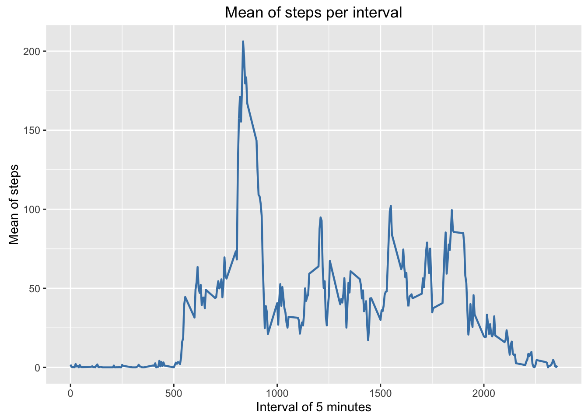
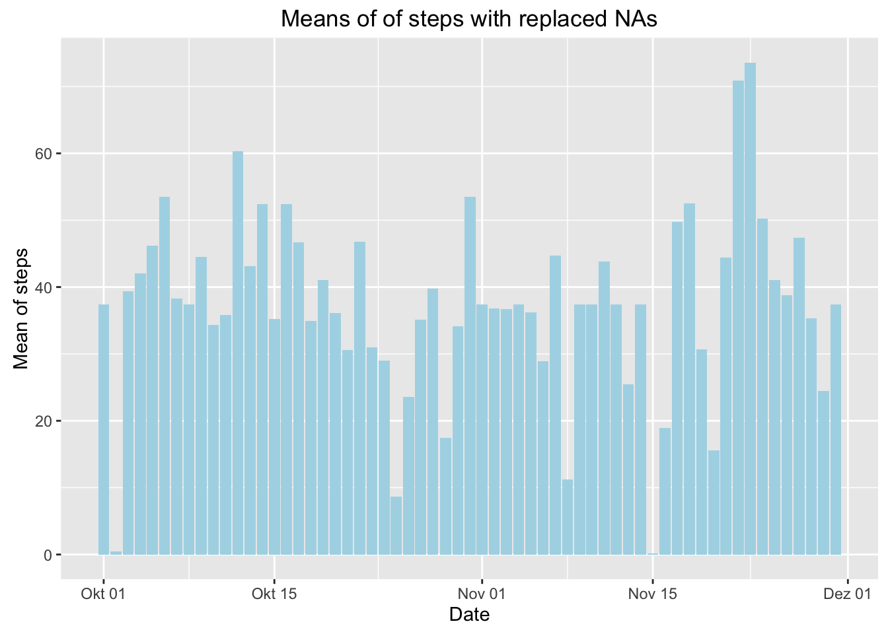

Reproducible Research: Peer Assessment 1
Majid
March 17, 2016
Loading and preprocessing the data
# load packages
suppressPackageStartupMessages({
library(magrittr)
library(dplyr)
library(ggplot2)
})
# import data
data <- read.csv("activity.csv",stringsAsFactors = F)
# save date as POSIXct
data$date <- as.POSIXct(data$date, format = "%Y-%m-%d")
head(data)## steps date interval
## 1 NA 2012-10-01 0
## 2 NA 2012-10-01 5
## 3 NA 2012-10-01 10
## 4 NA 2012-10-01 15
## 5 NA 2012-10-01 20
## 6 NA 2012-10-01 25What is mean total number of steps taken per day?
# plot total
ggplot(aes(date, steps), data = na.omit(data)) +
geom_bar(stat = "identity", fill = "lightblue") +
labs(title = "Total number of steps per day") +
ylab("Steps") +
xlab("Date") 
# summarise means
data %>%
na.omit() %>%
group_by(date) %>%
summarize(
mean = mean(steps, na.rm = TRUE),
median = median(steps, na.rm = TRUE)
)## Source: local data frame [53 x 3]
##
## date mean median
## (time) (dbl) (dbl)
## 1 2012-10-02 0.43750 0
## 2 2012-10-03 39.41667 0
## 3 2012-10-04 42.06944 0
## 4 2012-10-05 46.15972 0
## 5 2012-10-06 53.54167 0
## 6 2012-10-07 38.24653 0
## 7 2012-10-09 44.48264 0
## 8 2012-10-10 34.37500 0
## 9 2012-10-11 35.77778 0
## 10 2012-10-12 60.35417 0
## .. ... ... ...What is the average daily activity pattern?
# summarise mean per interval
data %>%
na.omit() %>%
group_by(interval) %>%
summarise(mean(steps)) %>%
set_names(c("interval", "mean")) ->
avgPatternData
# plot means
avgPatternData %>%
ggplot(., aes(interval, mean)) +
geom_line(color = "steelblue", size = 0.8) +
labs(title = "Mean of steps per interval") +
ylab("Mean of steps") +
xlab("Interval of 5 minutes") 
# extract highest mean
avgPatternData %>%
extract(
.$mean %>%
equals(max(avgPatternData$mean)) %>%
which(),
)## Source: local data frame [1 x 2]
##
## interval mean
## (int) (dbl)
## 1 835 206.1698Imputing missing values
# count NAs
data %>%
apply(1, function(row) any(is.na(row))) %>%
as.numeric() %>%
sum()## [1] 2304# replace NAs with mean
data %>%
apply(1, function(row, avgPatternData) {
if (is.na(row["steps"])) {
row %<>%
inset(
"steps",
avgPatternData %>%
filter(interval == as.numeric(row["interval"])) %>%
extract2("mean")
)
}
row
},
avgPatternData = avgPatternData) %>%
t() %>%
as.data.frame(stringsAsFactors = FALSE) %>%
mutate(
steps = as.numeric(steps),
interval = as.numeric(interval)
) ->
replacedNAData
# save date as date again
replacedNAData$date <- as.POSIXct(replacedNAData$date, form = "%Y-%m-%d")
# plot replaced NA data
replacedNAData %>%
group_by(date) %>%
summarise(mean(steps)) %>%
set_names(c("date", "mean")) %>%
ggplot(data = ., aes(date, mean)) +
geom_bar(stat = "identity", fill = "lightblue") +
labs(title = "Means of of steps with replaced NAs") +
ylab("Mean of steps") +
xlab("Date")
# compare new and old median
median(replacedNAData$steps) - median(data$steps, na.rm = TRUE)## [1] 0# compare new and old mean
mean(replacedNAData$steps) - mean(data$steps, na.rm = TRUE)## [1] 0Are there differences in activity patterns between weekdays and weekends?
# add weekend variable to replacedNAData
replacedNAData %<>%
mutate(
weekend = date %>%
weekdays() %in% (c(
"Samstag",
"Sonntag"
)) %>%
as.numeric()
)
# transform weekend variable to a factor
replacedNAData$weekend <- factor(replacedNAData$weekend, levels = c(0,1), labels = c("weekday", "weekend"))
# plot comparison of weekday and weekend
replacedNAData %>%
group_by(weekend, interval) %>%
summarize(mean(steps, na.rm = TRUE)) %>%
set_names(c("weekend", "interval", "mean")) %>%
ggplot(., aes(interval, mean)) +
geom_line(color = "steelblue", size = 0.8) +
facet_grid(. ~ weekend) +
labs(title = "Comparison of activity patterny by weekday & weekends") +
ylab("Mean of steps") +
xlab("Interval of 5 minutes")